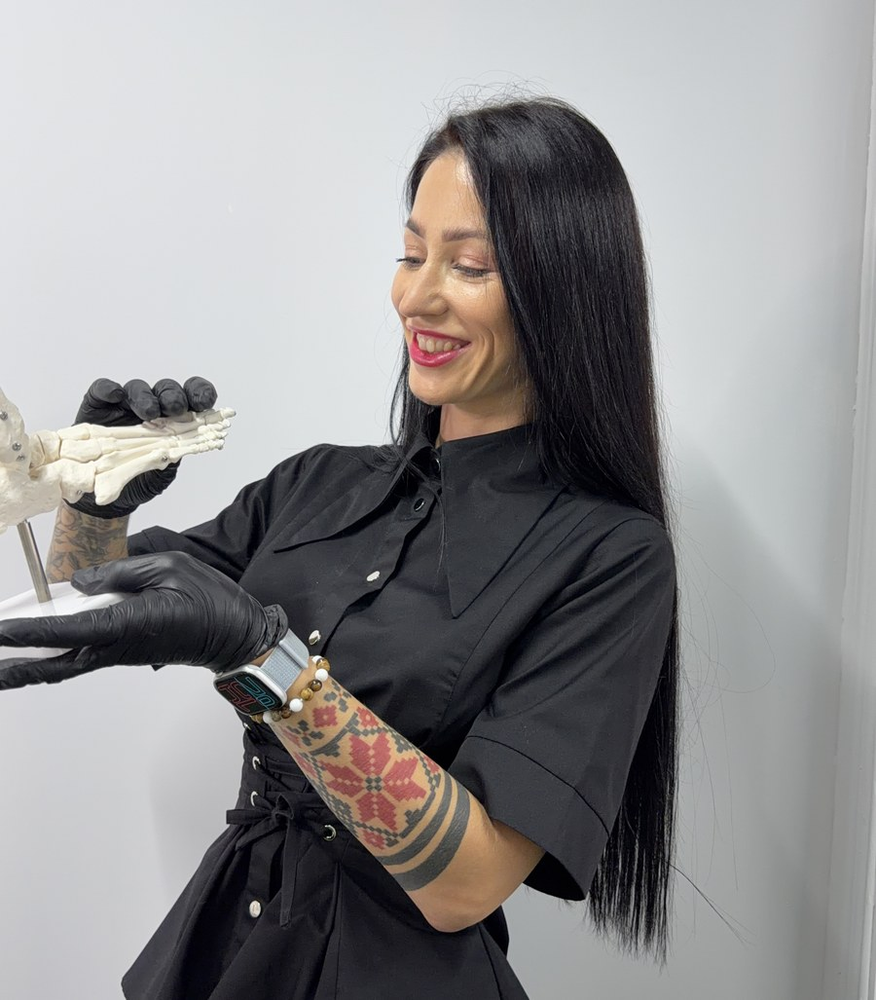
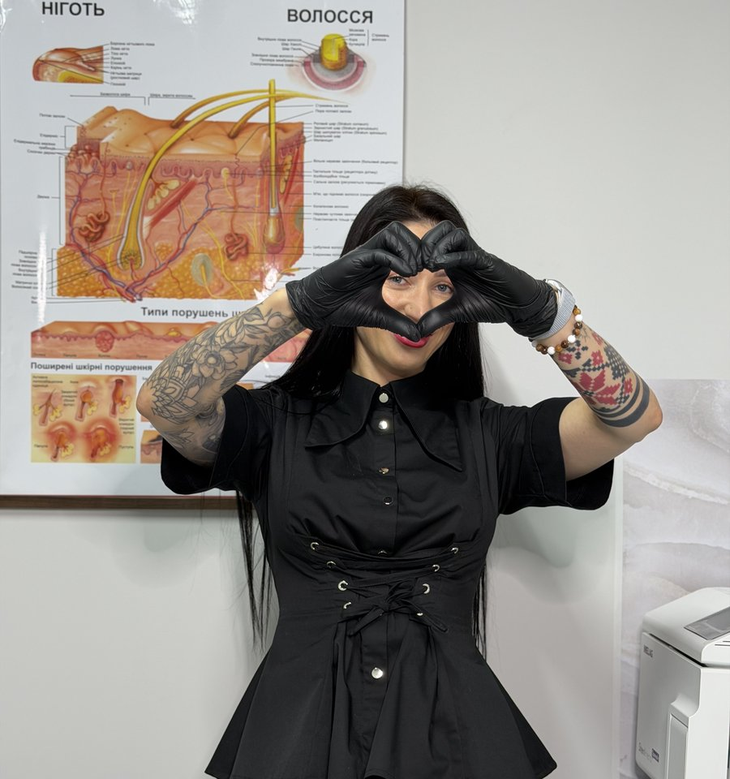

Трансформація від майстра педикюру до високооплачуваного подолога.
Збільшуйте середній чек у 3-5 разів, вирішуйте найскладніші проблеми стоп і нігтів та заповнюйте запис на 3 місяці наперед. Навчання через особистий діагностичний відео-розбір у Zoom та індивідуальну постановку руки від сертифікованого інструктора Arkada.

Чому навчання починається з діагностичної відео-зустрічі?
Ми не продаємо записані лекції у вакуумі. Перед зарахуванням на курс Крістіна особисто проводить 30-хвилинний відео-розбір у Zoom або Instagram.
Індивідуальна траєкторія для кожного майстра
На співбесіді ми аналізуємо вашу поточну точку А: які страхи заважають брати складні випадки, де просідає техніка або ціноутворення, і чи готові ви перейти в категорію медичного подолога з чеком від 1500 грн за годину.
Аналіз точки А та цілей
Оцінюємо ваш досвід в естетиці чи подології, визначаємо, скільки ви заробляєте зараз і до якої фінансової планки прагнете дійти.
Виявлення прогалин у техніці
Розбираємо, чого ви боїтеся: крові, запалень, роботи скальпелем, спілкування з вимогливими пацієнтами чи просування в Instagram.
Підбір відповідного пакету
Крістіна радить саме той курс чи модуль, який закриє ваші слабкі місця без переплати за зайву інформацію.
Бронювання місця на потік
Після схвалення кандидатури за вами закріплюється місце в групі з гарантованою підтримкою наставника.
4 авторські програми для вашого професійного росту
Від базової анатомії та норм СанПіН до складних корекційних систем і побудови черги клієнтів через соцмережі.
Подологія від А до Я та Особистий бренд
Повний комплексний курс із 18 модулів. Анатомія, стерилізація, мозолі, тріщини, оніхолізис, врослі нігті, протоколи ведення та залучення платоспроможних пацієнтів через Instagram.
Оніхолізис та дистрофії: протоколи відновлення
Вузькопрофільний курс по роботі з порожнинами під нігтями після опіків у лампі та травм. Техніка безпечної зачистки ложа без пошкодження паросткової зони та стимуляція регенерації.
Корекційні системи: Метод Arkada та титанова нитка
Безопераційне виправлення деформованих та скручених нігтів. Постановка титанової нитки, тампонування, розвантаження бічних валиків та купірування гострого запалення.
Індивідуальне стажування в клініці & постановка руки
Очний 2-денний інтенсив у клініці PODO.MEDIC у Києві або Ірпені. Робота пліч-о-пліч з Крістіною Жалейко на реальних пацієнтах-моделях з відпрацюванням кожного руху інструменту.
18 глибоких модулів Флагманського курсу
Повний зміст авторської програми: від медичних стандартів до масштабування особистого бренду та високих чеків.
- Модуль 1: Стандарти подологічного кабінету: ергономіка, зонування, освітлення та комфорт пацієнта.
- Модуль 2: Стерилізація по СанПіН нормам: дезінфекція, автоклав класу B, індикатори стерильності.
- Модуль 3: Імунологія стопи: взаємозв'язок шкірних патологій із загальним здоров'ям та ендокринною системою.
- Модуль 4: Підбір ріжучого та обертового інструменту: фрези, щипці, тампонотримачі, правила догляду.
- Модуль 5: Фізіологія та будова шкіри й нігтьового апарату: матрикс, ложе, валики, регенерація.
- Модуль 6: Збір анамнезу, заповнення медичної карти пацієнта та юридичний захист подолога.
- Модуль 7: Гіперкератоз: диференційна діагностика, безпечна обробка та розвантаження стопи.
- Модуль 8: 9 видів мозолів: стрижневі, піднігтьові, м'які, техніка апаратного висвердлювання без болю.
- Модуль 9: Тріщини на стопах: оклюзійні та знімні пов'язки, протоколи швидкої епітелізації.
- Модуль 10: Гіпергідроз: апаратні протоколи, гігієна, зниження пітливості та нейтралізація запаху.
- Модуль 11: Оніходистрофії, псоріаз, екзема та дерматити: сумісна робота з лікарями-дерматологами.
- Модуль 12: Врослий ніготь 1, 2, 3, 4 стадій: купірування гострого болю та техніка тампонування.
- Модуль 13: Оніхолізис: неінвазивна апаратна зачистка та відновлення зв'язку з нігтьовим ложем.
- Модуль 14: Біомеханіка стопи: аналіз навантаження, ортопедичні устілки та підбір правильного взуття.
- Модуль 15: Протоколи тривалого супроводу складних пацієнтів до 100% результату.
- Модуль 16: Продаж професійної космецевтики в кабінеті як додаткові +30 000 грн до чеку.
- Модуль 17: Прайс і фінанси: як перестати боятися високих цін і розрахувати собівартість.
- Модуль 18: Instagram подолога: як знімати експертні Reels, ламати страх камери та залучати пацієнтів.
Оберіть свій формат навчання
Відкриті ціни без прихованих платежів. Запис на кожен тариф відбувається через попередню відео-співбесіду з Крістіною Жалейко.
- Повний доступ до всіх 18 модулів навчальної платформи
- Участь у живих Zoom-лекціях двічі на тиждень
- Домашні завдання з перевіркою та зворотним зв'язком
- Складання іспиту та отримання диплома Академії
- Можливість оплати частинами
- Усе, що входить до пакету BASIC
- Особисті щотижневі розбори складних випадків з Крістіною Жалейко
- Пожиттєвий доступ до закритого клубу випускників подологів
- Глибинний аудит вашого Instagram: сценарії Reels та упаковка шапки
- Ексклюзивні дилерські знижки на закупівлю інструментів та препаратів
Що кажуть майстри після навчання
Реальні відгуки діючих фахівців, які подолали страх, підняли ціни та сформували чергу пацієнтів.
«Ти найкращий наставник, вчитель який тільки існує! Кожен, хто хоч раз спробував пройти в тебе хоча б один курс, мало того що виходить з величезним багажем знань, так ще й отримує підтримку в майбутньому. Ти та, яка радіє успіхам своїх курсантів більше, ніж своїм!»
«Після твоїх навчань я відразу приступаю до роботи. Рука відразу поставлена! Краще я заплачу раз дорожче, але вийду з тою базою, яка мені потрібна, ніж платитиму за воду на дешевих вебінарах. Кріс, ти даєш реально круті знання, ти мотивуєш та вселяєш впевненість!»
«Я працюю майстром манікюру та педикюру 8 років. Після курсу Крістіни я нарешті перестала боятися складних випадків: оніхолізис, тріщини, запалені валики. Чек виріс у 3 рази, клієнти тепер дивляться на мене як на справжнього експерта в білому халаті!»

Чому майстри довіряють моєму наставництву
«Я сама пройшла шлях від звичайного майстра нігтьової естетики до власного центру подології та статусу міжнародного інструктора. Я знаю кожну точку болю: страх поранити клієнта, нерозуміння анатомії, страх назвати гідну ціну за свою працю».
Моя мета - не просто дати вам теорію, а довести кожного студента до результату. Ми разом проходимо іспит, розбираємо ваші перші клінічні випадки і вибудовуємо систему запису, щоб ви ніколи більше не залежали від сезонності.
Все, що потрібно знати про навчання
Ні, спеціальна медична освіта не є обов'язковою. У курсі ми з нуля розбираємо анатомію, норми СанПіН, імунологію та протоколи безпеки так, щоб кожен крок був зрозумілим і юридично захищеним.
Курс побудований онлайн: живі відео-зустрічі в Zoom двічі на тиждень, відео-уроки у високій роздільній здатності та особистий чат для щоденного зворотного зв'язку. Якщо ви бажаєте пройти очну практику, ви можете приїхати на індивідуальне 2-денне стажування в клініку PODO.MEDIC.
Кожен ефір записується у високій якості та викладається в закритий Telegram-канал курсу протягом кількох годин. Ви зможете переглянути запис у будь-який зручний час і поставити запитання в чаті.
Після успішного складання усного та практичного іспиту вам видається офіційний номерний диплом Академії подології Крістіни Жалейко українською та англійською мовами, який підтверджує вашу кваліфікацію.
Запишіться на діагностичну співбесіду в Zoom
Заповніть коротку анкету. Крістіна особисто зв'яжеться з вами в Telegram або Instagram для узгодження часу 30-хвилинної відео-зустрічі.